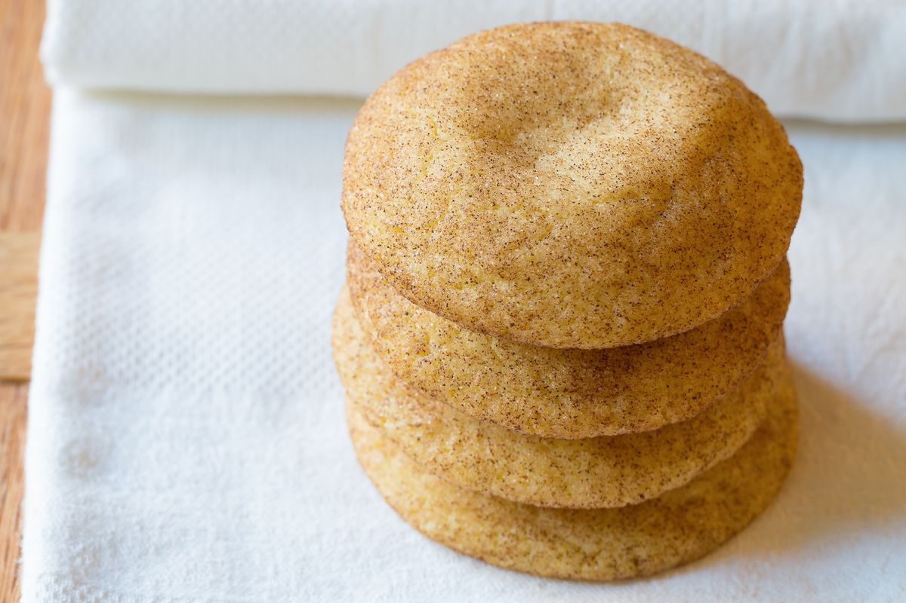

Snickerdoodles

Description
The quintessential holiday cookie. These snickerdoodles are soft and tender, easy to make, and sparkling with cinnamon sugar. Just how mom used to make them—maybe even better.
Good snickerdoodles are light and pillowy, with a sweet tangy overall flavor, and a glistening cinnamon crust. They are easy to make, require few ingredients, and require no chilling time in the fridge. Plus kids have fun rolling them into balls and coating them in cinnamon sugar
Ingredients
- 2 1/2 c. All-purpose Flour
- 2 tsp. Cream Of Tartar
- 1 tsp. Baking Soda
- 3/4 tsp. Salt
- 1 c. Unsalted Butter, Softened
- 1 3/4 c. Granulated Sugar, Divided
- 2 Large Eggs
- 1 tbsp. Ground Cinnamon
steps
- Preheat the oven to 400ºF and line several baking sheets with parchment paper.
- In a large bowl whisk together flour, cream of tartar, baking soda, and salt. Set aside.
- In the bowl of an electric mixer, cream butter and 1 ½ cups sugar together until light and fluffy, about 3–5 minutes. Then beat in eggs and scrape the bowl. Turn mixer on low and slowly add flour mixture until well combined.
- Mix remaining ¼ cup sugar and cinnamon together in a small bowl. Use a 1 ½ tablespoon cookie scoop to measure out dough balls. Roll each ball in your hands to even them out, then roll in cinnamon sugar to thoroughly coat.
- Place the balls on prepared baking sheets, 2 ½ inches apart. Bake for 8–9 minutes, until just barley golden around the edges. Cool for several minutes on the baking sheets before moving.